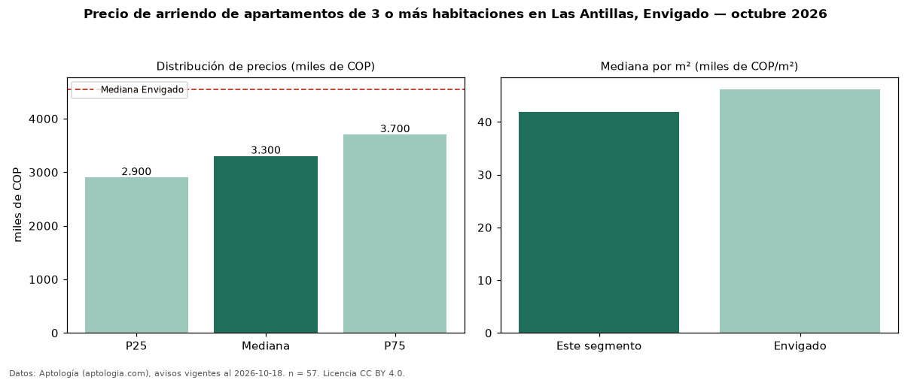

Precio de arriendo de apartamentos de 3 o más habitaciones en Las Antillas, Envigado — octubre 2026
Con 57 avisos vigentes, el canon mediano de apartamentos de 3 o más habitaciones en arriendo en Las Antillas, Envigado es COP 3,30 millones al mes. Frente a la mediana de Envigado para apartamentos de 3 o más habitaciones (COP 4,55 millones), queda 27 % por debajo. Por metro cuadrado, la mediana es COP 41.912/m² al mes (n = 57 avisos con área), 9 % por debajo de Envigado (COP 46.196/m²). Son 62 % de los 92 avisos de apartamentos en arriendo de la zona, cuya mediana general es COP 3,20 millones (+3 %). Con el precio por m² de venta del mismo segmento (COP 7,62 millones/m²), la rentabilidad bruta implícita es 6,6 % anual (aproximación con medianas de ofertas distintas). El área mediana anunciada es 75 m². El estrato más frecuente es 4 (86 % de los avisos con estrato). 91 % de los avisos con el dato declara parqueadero o cochera. Datos: Aptología (aptologia.com), CC BY 4.0 — https://www.aptologia.com/arriendo/envigado/las-antillas. Archivos: PDF, CSV con las cifras y gráfica PNG.

| Avisos únicos | 57 |
|---|---|
| Percentil 25 | COP 2.900.000 |
| Mediana | COP 3.300.000 |
| Percentil 75 | COP 3.700.000 |
| Mediana por m² | COP 41.911 |
Fuente: avisos vigentes de portales inmobiliarios recopilados por Aptología, deduplicados (mínimo 30 avisos únicos por celda). Precios pedidos, no cerrados. Fecha: 2026-10-18.